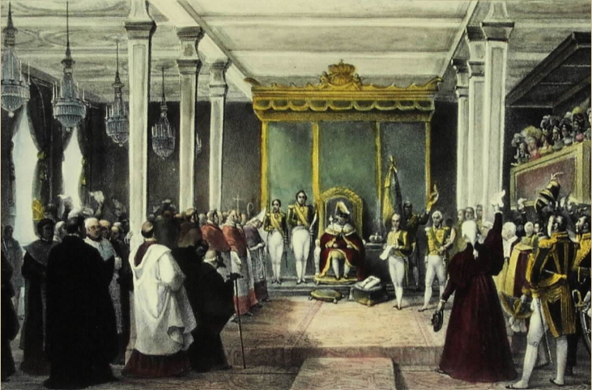
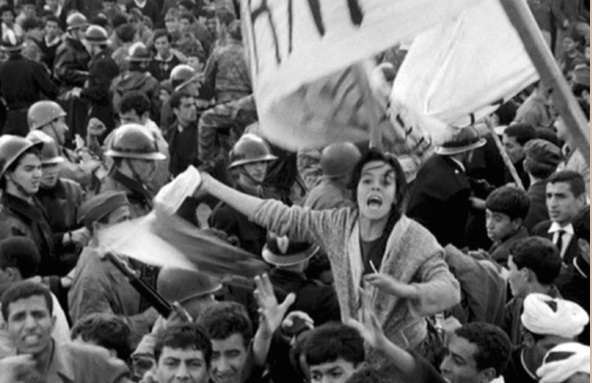

Az osztrákok súlyos vereséget szenvedtek el az olasz hadszíntéren, amely hozzájárult a birodalom gyengüléséhez. A Piemonti Királyság és Franciaország szoros együttműködése ledöntötte az osztrák befolyást Észak-Olaszországban, növelve a nemzeti mozgalmakat.
Az osztrák abszolutista politika gazdasági válságot idézett elő, amelynek következtében a Habsburg Birodalom pénzügyi helyzete súlyosan megromlott. A fenntarthatatlan kiadások és az adóterhek növekedése még inkább fokozta a belső feszültségeket.
A Habsburg Birodalom politikai vezetése egyre inkább elvesztette a nép bizalmát, amely a reformok hiányában és a politikai elnyomás miatt nőtt. A különböző nemzeti mozgalmak kiemelkedtek, és a politikai diskurzus egyre feszültebbé vált.
A Korán Allah kinyilatkoztatásait tartalmazza, míg a Szunna Mohamed próféta mondásait és cselekedeteit foglalja magában. Ezek a két forrás képezik az iszlám vallás jogi és etikai alapjait, valamint irányítják a muszlimok mindennapi életét.
A Habsburg Birodalom gyengülésével a magyarok számára egyre inkább kézzelfoghatóvá vált a politikai engedmények kilátása. A nemzetközi helyzet és a belső feszültségek kényszerítették az osztrák vezetést az együttműködésre a magyar elittel.